A tymczasem w Cameracie...
.
2015-05-09
Spotykamy się radośni o 10.15 na stadionie KS Górnik w Wieliczce. Mamy śpiewać i tańczyć poloneza.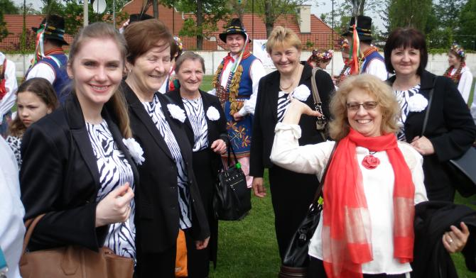
Polonez na ??? ilość par. Czy w Wieliczce pobijemy rekord Guinessa ? Tańczyli wszyscy chętni, którzy się zarejestrowali. Nad całością czuwał, opracował figury i prowadził, nasz kolega z Cameraty - bas Kaziu Nowak.Na początek krótki pokaz figur, które muszą być zatańczone przez wszystkie pary.
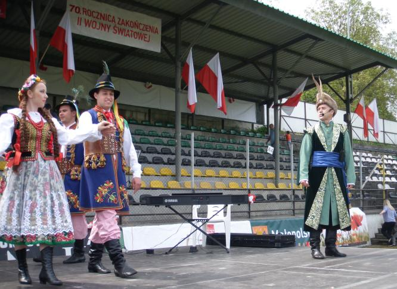
Byliśmy i my.
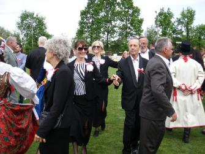 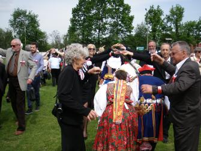 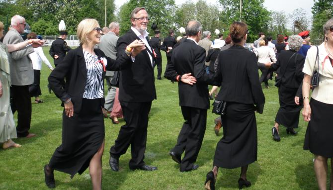 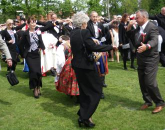 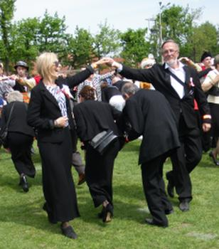 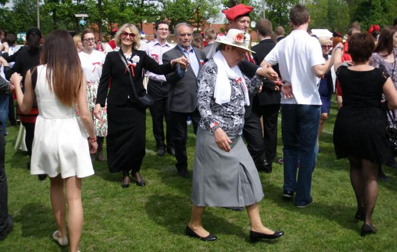
166 par, czyli 332 osoby tańczyły poloneza na stadionie KS Górnik w Wieliczce podczas próby bicia rekordu Guinnessa. Widok imponujący.
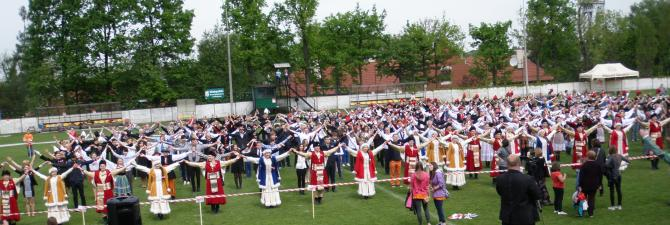
Próba pobicia rekordu Guinnessa w liczbie osób tańczących poloneza była pierwszym elementem uroczystych obchodów 70 rocznicy zakończenia II wojny światowej w Wieliczce.Teraz krótka część oficjalna.
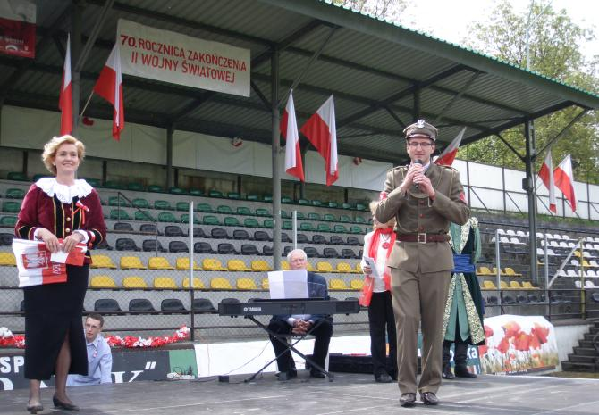
Drugim elementem był koncert pieśni patriotycznych. Śpiewał chór Camerata (niestety samotnie, gdyż inne chóry nie przyszły) z wszystkimi uczestnikami i widzami.
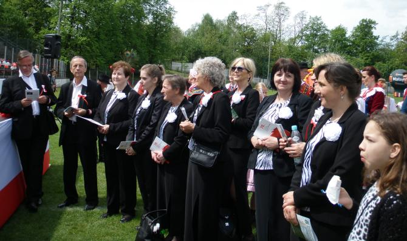
Nad całością czuwała i śpiewała oczywiście ze wszystkimi Izabela Szota – sopran, dyrygent chóru Camerata, pomagał Kazimierz Nowak – Bas Camerata, akompaniował Andrzej Kłyszewski – tenor Camerata, śpiewali wszyscy, którzy tu byli :)
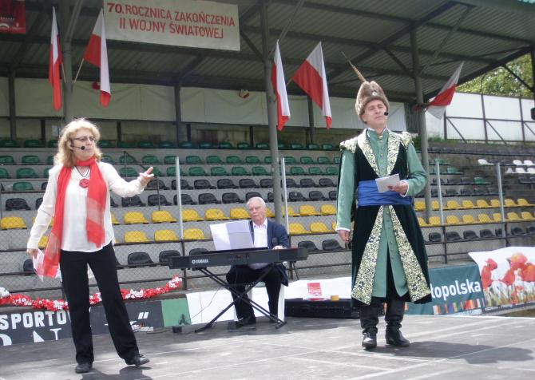 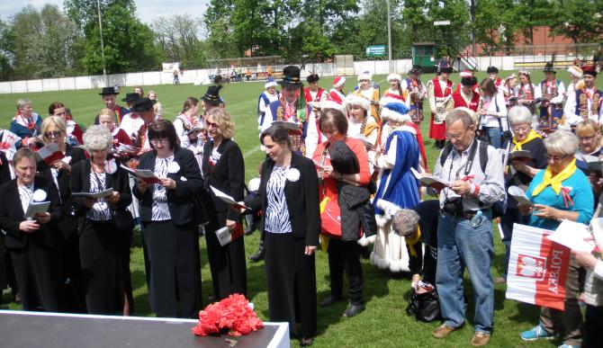

© Stowarzyszenie Muzyczne Chór Camerata Wieliczka
Projekt i wykonanie:  Prowadzenie strony: Małgorzata Wysocka-Cebula
Prowadzenie strony: Małgorzata Wysocka-Cebula